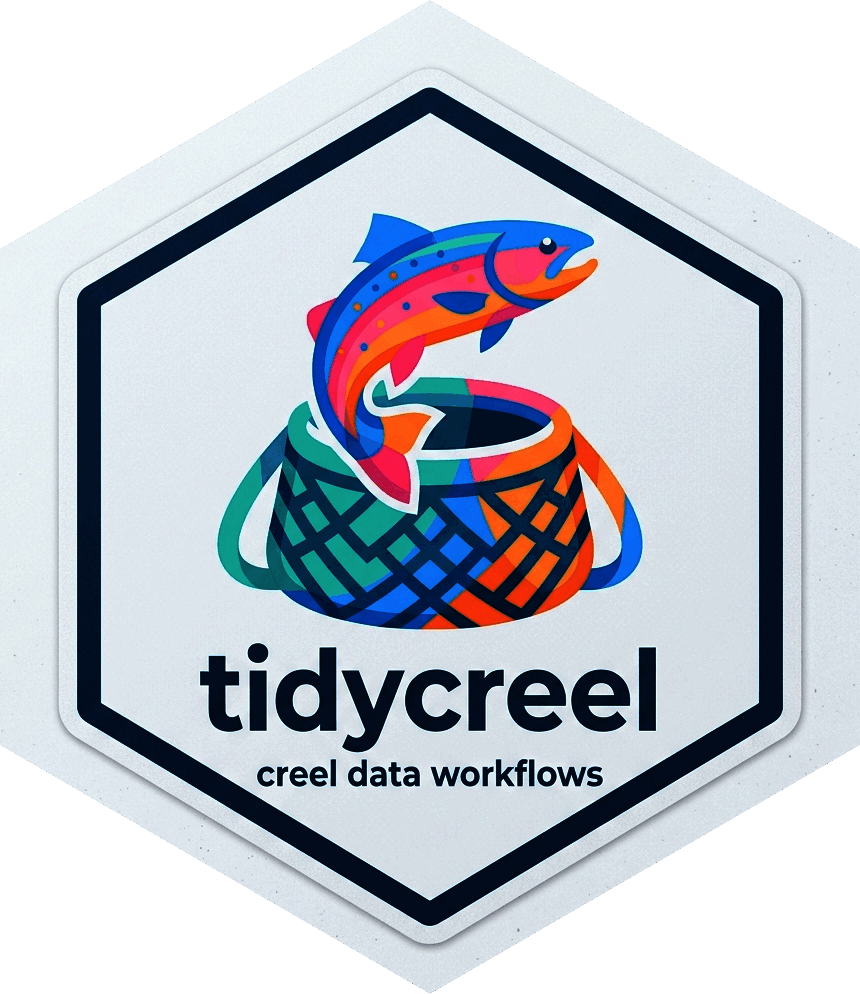

Compare two estimates from independent surveys
Source:R/combine-estimates.R
compare_estimates.RdThe difference of two estimates of the same quantity from separate,
independently sampled surveys – effort, catch or a catch rate on day
shifts against night shifts, one lake against another. The difference is
estimate_a - estimate_b, its variance the sum of the two variances
(independence makes the covariance zero), and its interval and test use
the Satterthwaite degrees of freedom, as combine_estimates() does.
Value
A tibble with one row per group: the grouping columns, then
estimate_a, estimate_b, difference, se, df (Satterthwaite;
Inf for a normal reference), ci_lower, ci_upper, statistic
(difference / se, a t statistic on df), p_value (two-sided),
estimator_a and estimator_b. The confidence level is the parts' own.
Details
Every check of combine_estimates() applies, with one exception: rates are
allowed, because comparing two rates is meaningful where adding them is
not. The two parts may use different rate estimators (a roving
mean-of-ratios against an access ratio-of-means estimate the same
quantity); each part's estimator is reported.
The independence checks matter more here than for a sum. One pooled rate used for both parts gives a difference of exactly 0 with a positive standard error, which reads as "no difference" when no comparison was made.
Exactly two parts. More than two is a multiple-comparison question this function does not answer.
References
Satterthwaite, F. E. (1946). An approximate distribution of estimates of variance components. Biometrics Bulletin 2(6): 110–114.
See also
combine_estimates() for the sum of estimates.
Other "Estimation":
combine_estimates(),
compare_cpue_estimators(),
est_age_distribution(),
est_biomass(),
est_compliance(),
est_effort_camera_mi(),
est_length_distribution(),
est_mean_age(),
est_mean_length(),
estimate_catch_rate(),
estimate_effort(),
estimate_effort_aerial_glmm(),
estimate_harvest_rate(),
estimate_release_rate(),
estimate_total_catch(),
estimate_total_harvest(),
estimate_total_release()
Examples
cal <- data.frame(
date = as.Date("2024-06-01") + 0:9,
day_type = rep(c("weekday", "weekday", "weekend", "weekend", "weekday"), 2)
)
sampled <- cal[c(1, 2, 3, 4, 6, 8), ]
# Angler counts on the sampled days of one lake, 8-hour fishing day
lake <- function(anglers) {
d <- creel_design(cal, date = date, strata = day_type)
d <- add_counts(
d, data.frame(sampled, anglers = anglers, shift_hours = 8),
period_length_col = shift_hours
)
estimate_effort(d)
}
compare_estimates(lake(c(12, 30, 9, 25, 14, 33)), lake(c(4, 11, 6, 15, 5, 12)))
#> # A tibble: 1 × 11
#> estimate_a estimate_b difference se df ci_lower ci_upper statistic
#> <dbl> <dbl> <dbl> <dbl> <dbl> <dbl> <dbl> <dbl>
#> 1 1611. 672 939. 379. 5.13 -28.9 1906. 2.47
#> # ℹ 3 more variables: p_value <dbl>, estimator_a <chr>, estimator_b <chr>